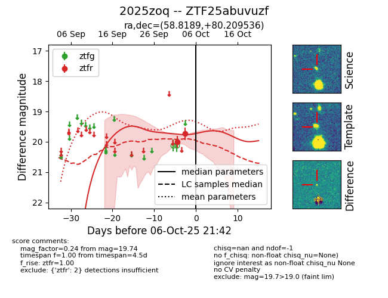
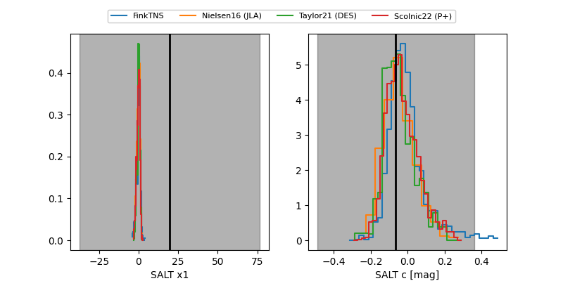

FINK: ZTF25abuvuzf
Lasair: ZTF25abuvuzf
ALeRCE: ZTF25abuvuzf
TNS: 2025zoq
YSE: 2025zoq
ZTF25abuvuzf (ztf,fink)
2025zoq (tns,yse)
equatorial (ra, dec) = (58.8189,+80.20954)
galactic (l, b) = (130.4124,+20.12915)


last ztfr=19.74
2 ztfr detections